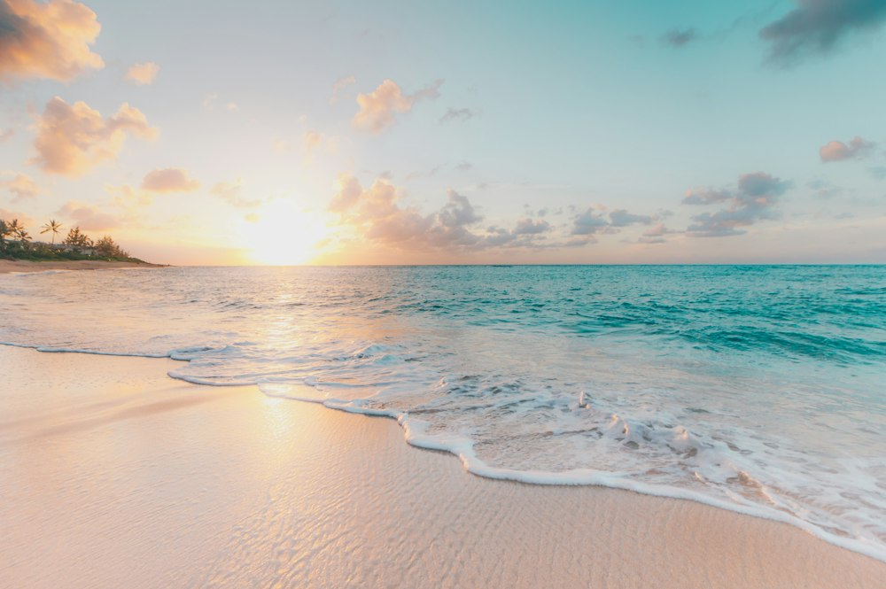

View Biển Độc Bản

• Resort Phương Nam, Duyên Hải
1. Cầu Nam Hải Vươn Biển
Cây cầu gỗ huyền thoại vươn dài ra giữa vịnh Đồng Tranh, hai bên là biển nước mênh mông. Nơi cho ra đời những bức ảnh phong cách điện ảnh lãng mạn vào bình minh và hoàng hôn.